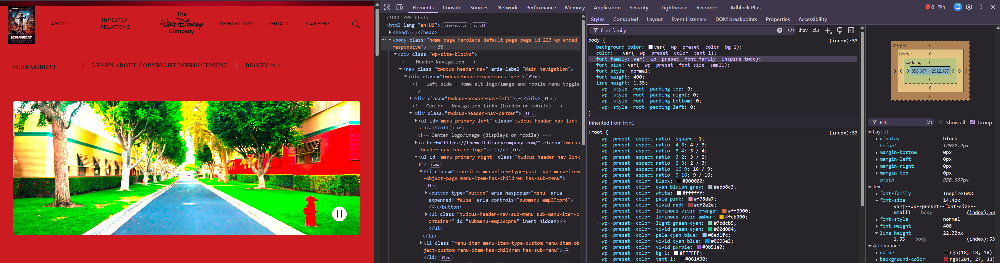

My Dev Tools Vandalism
I used browser developer tools to temporarily "vandalize" a website. Below is a screenshot showing my changes. These edits only appeared on my computer and did not affect the actual website.

What I "Vandalized"
I made several changes to the html and css:
- I changed the trending items below the nav bar to refer to Screamboat the movie.
- I changed the website background from white to vivid red, and changed the font to ITC Serif Gothic.
- Horror movies commonly use red backgrounds and strong typography like ITC Serif Gothic
- It was difficult to target the correct CSS property due to inheritances.
- Steamboat Willie is a classic Disney cartoon that recently had copyright lifted.
- I was able to understand how the HTML and CSS worked together after some practice.
- I can see how dev tools can be incredibly useful for web development. I want to try Brave and Firefox.